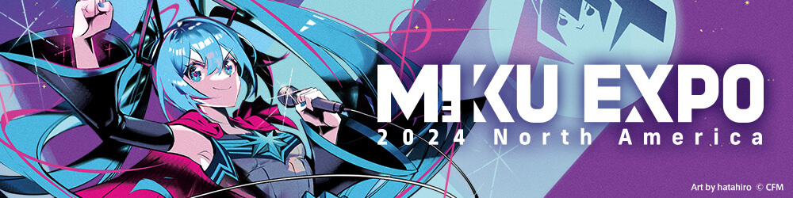

Welcome Earthlings...

About Miku!
Hatsune Miku: The Digital Diva Redefining Pop Culture
Hatsune Miku, a virtual pop sensation, emerged onto the global stage as a pioneer of the Vocaloid phenomenon. Developed by Crypton Future Media, she represents a fusion of technology and creativity, captivating audiences with her iconic turquoise hair and energetic performances. Debuting in 2007 as a software voicebank for Yamaha Corporation's Vocaloid synthesizer, Miku quickly transcended her origins, evolving into a cultural icon in Japan and beyond.
Miku's influence extends far beyond mere music, encompassing a diverse array of media, including concerts, merchandise, and even collaborations with renowned artists and brands. Through her concerts, which utilize cutting-edge holographic technology, she has achieved a remarkable level of intimacy and connection with her fans, known as "Mikuers." Beyond her commercial success, Miku symbolizes the democratization of creativity, inspiring countless artists to explore new avenues of expression in the digital age. As an emblem of innovation and imagination, Hatsune Miku continues to redefine the boundaries of popular culture, leaving an digital mark on the world stage.
Latest News About Miku!
HATSUNE MIKU EXPO 2024 NORTH AMERICA
Step into the electrifying world of Hatsune Miku as we celebrate a decade of musical magic with the Hatsune Miku Expo 2024! Join us in honoring this iconic virtual performer, who has captivated hearts worldwide with her mesmerizing melodies and boundless energy. In this special event, Miku takes center stage alongside her talented friends for unforgettable performances that blur the lines between reality and virtuality. Immerse yourself in the pulsating beats and dazzling visuals as Miku and her comrades deliver performances that will leave you breathless. But the excitement doesn't end there—indulge your passion for all things Miku with exclusive merchandise and connect with fellow fans who share your love for this digital diva. Don't miss your chance to be a part of history as we commemorate ten incredible years of Hatsune Miku's extraordinary journey!
Click Here to Learn More!

Get More of Miku Here!